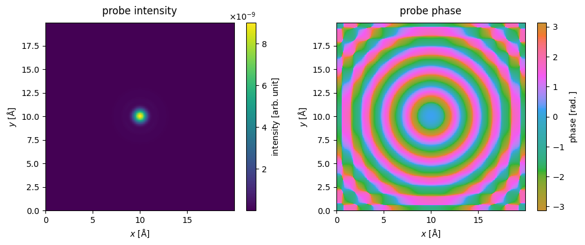
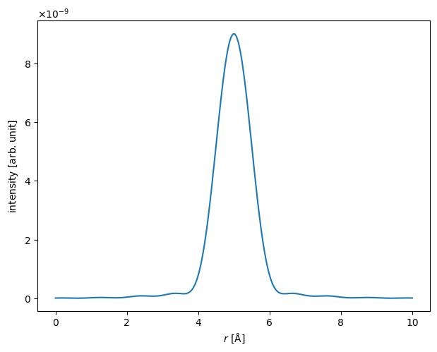
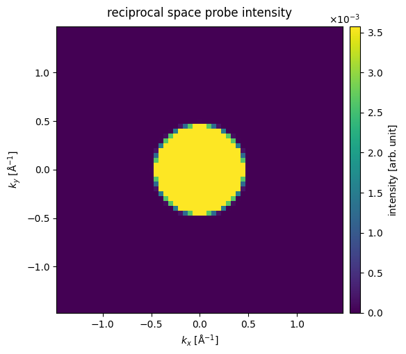
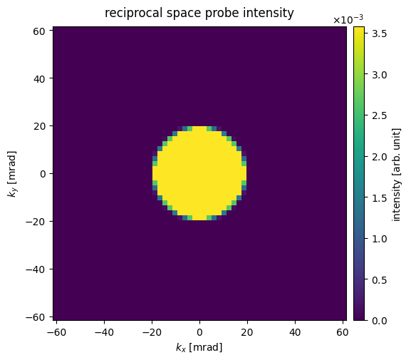
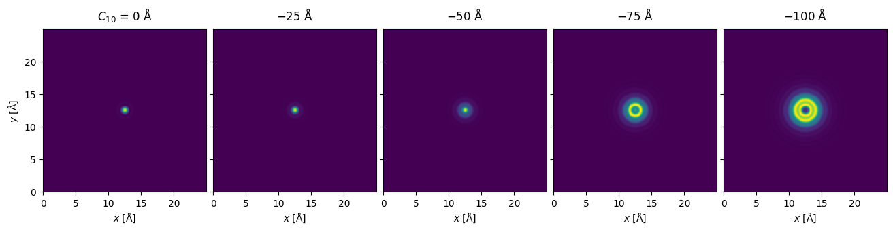
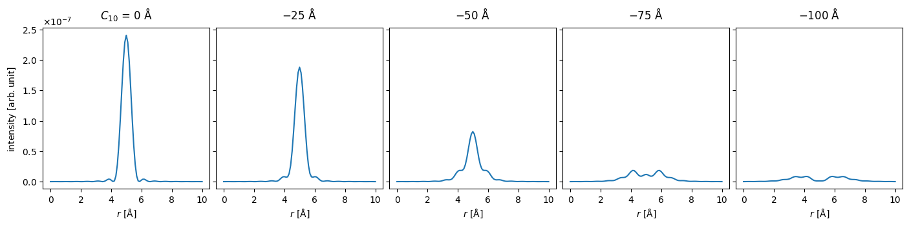
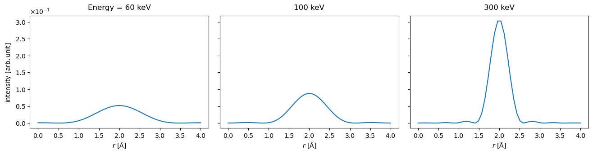
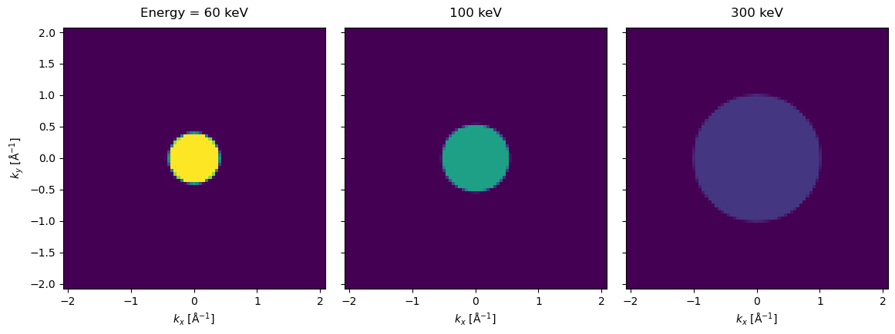

Wave functions#
The multislice algorithm works by propagating the \(xy\) part of the wave function (defined as \(\psi\) in the appendix) through the electrostatic potential. To start the propagation, we need to assume the initial conditions for the wave function, i.e. a wave function describing the electron beam formed by the electron optics before the sample.
abTEM defines three types of wave functions:
PlaneWave: Simulate HRTEM, SAED or other imaging modes with parallel-beam plane wave illumination.Probe: Simulate CBED, STEM or other imaging modes with a converged electron beam.Waves: Defines any custom wave function.PlaneWaveandProbecan be converted toWaves.
See also
abTEM implments the PRISM algorithm using the SMatrix, which is not included in the list above. However, in most ways it can be used similar to Probe; see our tutorial on PRISM in abTEM.
Plane wave functions#
The default plane wave is just defined to be equal to unity everywhere in the plane
where \(\vec{r} = (x, y)\) is the real space coordinate in the \(x\)- and \(y\)-direction. While mathematically, those coordinates are usually considered to be continuous, in a numerical simulation we have define a discrete grid with a finite extent to represent them.
We create a plane wave on a \(256 \times 256\) grid with a lateral extent of \(5\times 5\) \(\mathrm{Å}^2\) and an energy of \(300 \ \mathrm{keV}\).
plane_wave = abtem.PlaneWave(gpts=256, extent=5, energy=300e3)
The real-space sampling, or pixel size, is calculated by dividing the extent by the number of grid points (gpts). The properties related to the grid, i.e. the extent, gpts and sampling, can be accessed as properties of the PlaneWave object.
plane_wave.extent, plane_wave.gpts, plane_wave.sampling
((5.0, 5.0), (256, 256), (0.01953125, 0.01953125))
The grid is fully defined from just two of the three quantities listed above, and thus we may pick any combination of two to define it.
The relativistic wavelength of the electron beam may be accessed as:
print(f"Wavelength: {plane_wave.wavelength:.4f} Å")
Wavelength: 0.0197 Å
Note
abTEM uses the same unit conventions as ASE, as defined in the ase.units module. Thus, electron volts (eV), Ångström (Å), and atomic mass units are defined as 1.0. The electrostatic potential is given in (eV / e). Angles in abTEM are for convenience given in milliradians (mrad).
We can turn the PlaneWave into a generic Waves by using build.
waves = plane_wave.build()
The Waves describe the wave function as a complex Dask array (see our page on parallelization), as accessed below.
waves.array
|
||||||||||||||||
After computing the values of the wave function, it will be described as a NumPy array.
waves.compute()
waves.array
array([[1.+0.j, 1.+0.j, 1.+0.j, ..., 1.+0.j, 1.+0.j, 1.+0.j],
[1.+0.j, 1.+0.j, 1.+0.j, ..., 1.+0.j, 1.+0.j, 1.+0.j],
[1.+0.j, 1.+0.j, 1.+0.j, ..., 1.+0.j, 1.+0.j, 1.+0.j],
...,
[1.+0.j, 1.+0.j, 1.+0.j, ..., 1.+0.j, 1.+0.j, 1.+0.j],
[1.+0.j, 1.+0.j, 1.+0.j, ..., 1.+0.j, 1.+0.j, 1.+0.j],
[1.+0.j, 1.+0.j, 1.+0.j, ..., 1.+0.j, 1.+0.j, 1.+0.j]],
shape=(256, 256), dtype=complex64)
The normalization of the wave function used above ensures that the intensity per area is constant when the grid is changed. However, this is not a very natural normalization in reciprocal space, and we may instead define the plane wave such that the total intensity of the plane wave is, i.e. the wave function (in reciprocal space) is given by
We create a plane wave with this normalization by setting normalize=True.
normalized_plane_wave = abtem.PlaneWave(
gpts=256, extent=5, energy=300e3, normalize=True
)
Probe wave functions#
In abTEM, a focused beam of electrons, or Probe, is defined in Fourier space as
where \(A(k)\) is the aperture function, \(\chi(\vec{k})\) is the phase error and \(\vec{k} = (k_x, k_y)\) is the spatial frequency in \(x\) and \(y\), respectively. The real-space probe is just the inverse Fourier transform
The probe wave function is normalized such that its intensity sums to \(1\) in Fourier space
We create a probe with a sampling of \(0.05 \ \mathrm{Å}\), an extent of \(20\times 20\) \(\mathrm{Å}^2\), an energy of \(80 \ \mathrm{keV}\), a convergence semiangle (semiangle_cutoff) of \(30 \ \mathrm{mrad}\), a defocus (C10; note the common negative sign convention here) of \(-50 \ \mathrm{Å}\) and spherical aberration (Cs) of \(-50 \ \mathrm{\mu m}\) (note the conversion to \(\mathrm{m}\) and then to \(\mathrm{Å}\)).
probe = abtem.Probe(
sampling=0.05,
extent=20,
energy=80e3,
semiangle_cutoff=20,
C10=50,
Cs=-50e-6 * 1e10,
)
See also
See our introduction to the contrast transfer function for a full list of phase aberrations.
We can again turn the Probe into the generic Waves by using build, which, as the plane wave, is represented by a Dask array.
waves = probe.build()
waves.array
|
||||||||||||||||
Visualizing the wave function#
To visualize the wave function using abTEM’s built-in visualization module, we first have to convert it to a measurement type. The most common methods are intensity and diffraction_patterns, which will return a measurement of type Images and DiffractionPatterns, respectively.
The real space intensity, \(\|\psi\|^2\), and phase of the probe is calculated and shown below. The parameter cbar=True displays the color intensity scale.
intensity = probe.build().intensity().compute()
phase = probe.build().phase()
fig, (ax1, ax2) = plt.subplots(1, 2, figsize=(10,4))
intensity.show(cbar=True, title="probe intensity", ax=ax1)
phase.show(cbar=True, title="probe phase", cmap="hsluv", ax=ax2)
plt.tight_layout()

Note
The axes convention in abTEM for arrays representing a wave functions assigns the first axis to the \(x\)-axis and the second axis to the \(y\)-axis. This is different from the convention often used for images, and the convention used by matplotlib. The correct way of displaying an array representing the wave function intensity from abTEM with matplotplib is given below.
import matplotlib.pyplot as plt
image = waves.intensity().array
plt.imshow(image.T, extent=[0, waves.extent[0], 0, waves.extent[1]], origin="lower")
The image is transposed to reverse the order of the axes and the direction of the \(y\)-axis is reversed by setting origin="lower".
Showing a lineprofile sometimes provides a more readily understable visualization. We use interpolate_line_at_position to create a LineProfile across the center of the probe intensity.
lineprofile = intensity.interpolate_line_at_position(
center=(10, 10), angle=0, extent=10
)
lineprofile.show()
<abtem.visualize.visualizations.Visualization at 0x1cc862d50>

It is often useful to know the width of the probe. Below we calculate the width at \(0.5\) of the height of the probe (i.e. the full width at half-maximum, FWHM).
fwhm = lineprofile.width(height=0.5)
print(f"FWHM = {fwhm.item():.2f} Å")
FWHM = 1.11 Å
The Fourier-space intensity, \(\|\hat{\psi}\|^2\), is calculated and shown below. We set max_angle=60 to only include angles up to \(60 \ \mathrm{mrad}\).
diffraction_patterns = probe.build().diffraction_patterns(max_angle=60)
visualization = diffraction_patterns.show(
cbar=True, title="reciprocal space probe intensity"
)

Alternative to reciprocal-space units, we can display diffraction patterns in angular units by using the keyword units='mrad'.
visualization = diffraction_patterns.show(
cbar=True, units="mrad", title="reciprocal space probe intensity"
)

Wave-function ensembles#
In general, Waves can represent an ensemble of wave functions as a multidimensional array. The last two dimensions of Waves represent the spatial dimensions, which are the mandatory or base dimensions of the object. Any preceeding dimension is an optional ensemble dimension. The ensemble dimensions may represent a range of defocii, positions, frozen phonons, tilt and more. In computations, abTEM will automatically parallelize over the ensemble dimensions.
As an example, we create an ensemble of probes with different values for their defocus.
defocus_series = np.linspace(0, 100, 5)
probe_focal_series = abtem.Probe(
gpts=256,
extent=25,
energy=80e3,
semiangle_cutoff=30,
defocus=defocus_series,
)
waves_focal_series = probe_focal_series.build().compute()
Warning
Not every parameter in abTEM allows setting with an array, check the API documentation for arguments admitting BaseDistribution as a value.
Now Waves is a 1D ensemble of 2D wave functions, hence its shape is 3D.
waves_focal_series.shape
(5, 256, 256)
We can inspect the axes_metadata property to see that the first axis is the ensemble ParameterAxis over C10, equivalent to negative defocus, and the base are RealSpaceAxis.
waves_focal_series.axes_metadata
type label coordinates
------------- ------- ------------------------
ParameterAxis C10 [Å] -0.00 -25.00 ... -100.00
RealSpaceAxis x [Å] 0.00 0.10 ... 24.90
RealSpaceAxis y [Å] 0.00 0.10 ... 24.90
We can obtain an ensemble of Images, which can be conveniently shown in an “exploded” plot.
waves_focal_series.show(explode=True, figsize=(14, 3));

The plot above scales the maximum intensity of each panel. You can set common_color_scale=True to get a better representation of the relative intensity between each panel.
Alternatively, we can show a selection of lineprofiles. When using methods, such as interpolate_line_profiles, on an ensemble, it will be applied to each member of the ensemble. The show method handles these automatically.
line_profiles = waves_focal_series.intensity().interpolate_line_at_position(
center=(12.5, 12.5), angle=0, extent=10
)
visualization = line_profiles.show(explode=True, figsize=(15, 3), common_scale=True);

Waves can have any number of ensemble dimensions, for example, we can add two additional axes representing a scan in the \(x\)- and \(y\)- direction, thus producing a 3D ensemble of 2D wave functions.
scan = abtem.GridScan()
waves_focal_series_scanned = probe_focal_series.build(scan=scan)
waves_focal_series_scanned.array
|
||||||||||||||||
Be careful about running the compute method after adding ensemble dimensions before applying a reduction operation, such as taking an ensemble mean or applying a detector. The above ensemble would take \(\sim 13 \ \mathrm{GB}\) of memory.
Energy ensembles#
Since version 1.1.0, the acceleration energy is an ensemble parameter like any other: PlaneWave, Probe, SMatrix and BlochWaves all accept a list of energies instead of a single value, and the resulting ensemble dimension is an EnergyAxis.
Energy differs from the other ensemble parameters in one important respect: it sets the wavelength, and hence everything derived from it. Below we build the same \(20 \ \mathrm{mrad}\) probe at three acceleration voltages.
probe_energy_series = abtem.Probe(
gpts=256,
extent=20,
energy=[60e3, 100e3, 300e3],
semiangle_cutoff=20,
)
waves_energy_series = probe_energy_series.build().compute()
waves_energy_series.axes_metadata
type label coordinates
------------- ----------- ----------------------------
EnergyAxis Energy [eV] 60000.00 100000.00 300000.00
RealSpaceAxis x [Å] 0.00 0.08 ... 19.92
RealSpaceAxis y [Å] 0.00 0.08 ... 19.92
The probe is limited by the same convergence semiangle at every energy, so the shorter wavelength at higher energy produces a narrower probe.
line_profiles = waves_energy_series.intensity().interpolate_line_at_position(
center=(10, 10), angle=0, extent=4
)
visualization = line_profiles.show(explode=True, figsize=(14, 3), common_scale=True);

Indexing an energy ensemble carries the energy of the selected member into its metadata, so energy-dependent properties are resolved for that member alone.
for waves in waves_energy_series:
print(
f"{waves.metadata['energy'] * 1e-3:>3.0f} keV: "
f"wavelength = {waves.wavelength:.4f} Å, "
f"angular sampling = {waves.angular_sampling[0]:.2f} mrad"
)
60 keV: wavelength = 0.0487 Å, angular sampling = 2.43 mrad
100 keV: wavelength = 0.0370 Å, angular sampling = 1.85 mrad
300 keV: wavelength = 0.0197 Å, angular sampling = 0.98 mrad
The same convergence semiangle covers a different range of spatial frequencies at each energy: the shorter the wavelength, the further out in reciprocal space the aperture reaches, which is why the probe above narrows with energy.
diffraction_patterns_energy_series = waves_energy_series.diffraction_patterns(
max_angle=40
)
visualization = diffraction_patterns_energy_series.show(
explode=True, figsize=(14, 4), common_color_scale=True
);

Warning
A full energy ensemble has no single energy, and abTEM resolves the energy-dependent parts of it against one member: angular_sampling reports the value for the highest energy of the ensemble, and angular plot units (units="mrad") are converted with a single energy, giving every panel of an exploded plot the same angular scale. Show whole energy ensembles in reciprocal-space units (the default), and index the ensemble before switching to angular units.
Energy ensembles are supported by PlaneWave.multislice, Probe.multislice and Probe.scan, by SMatrix.reduce and SMatrix.scan, and by the BlochWaves methods; a CTF given several energies is applied per member. Two things still require a single energy: SMatrix.build(upsample=True), where the compressed C-PRISM representation has no ensemble axis to carry the energies (use reduce or scan instead), and quantities that have to be resolved before the ensemble exists, such as defocus="scherzer" and CTF.profiles().